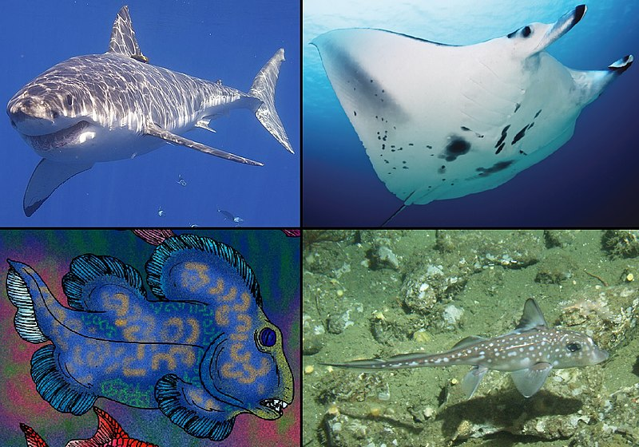

Selaceos:
Los Selacios son un grupo de peces cartilaginosos que pertenecen a la clase Chondrichthyes, y son conocidos comúnmente como tiburones y rayas. Estos animales se caracterizan por tener un esqueleto hecho de cartílago en lugar de hueso,
lo que los hace diferentes de los peces óseos, que tienen un esqueleto óseo.
Aquí te doy una visión general de los selacios:

Diversidad y Clasificación:
Tiburones:
Son uno de los grupos más reconocibles dentro de los selacios. Hay más de 500 especies de tiburones, que varían en tamaño desde el tiburón ballena, que puede alcanzar más de 12 metros de longitud, hasta especies más pequeñas como el tiburón linterna.
Rayas y Mantas: Incluyen rayas, mantas y otros peces planos. Estas especies suelen tener cuerpos aplanados y adaptaciones especiales para la vida en el fondo marino o para una vida pelágica (en la columna de agua).
Anatomía y Adaptaciones:
Esqueleto de Cartílago:
El cartílago es más ligero que el hueso, lo que ayuda a los selacios a mantenerse a flote. Además, el cartílago es flexible, lo que permite una mayor agilidad.
Escamas Dentadas: La piel de los tiburones y rayas está cubierta de pequeñas estructuras llamadas dentículos dérmicos, que proporcionan una superficie rugosa y ayuda a reducir la resistencia al nadar.
Sistemas de Sentidos: Los selacios tienen un agudo sentido del olfato y la capacidad de detectar campos eléctricos mediante los órganos de Lorenzini, lo que les ayuda a localizar presas en aguas turbias o en la oscuridad.
Reproducción:
Métodos Diversos:
Los selacios pueden reproducirse de diferentes maneras. Algunas especies tienen fertilización interna y dan a luz crías vivas (ovovivíparos y vivíparos), mientras que otras ponen huevos (ovíparos). Los huevos de tiburón y raya a menudo tienen una cápsula protectora conocida como "bolsa de terciopelo".
para conocer mas sobre los escualiformes haz click en esta imagen: